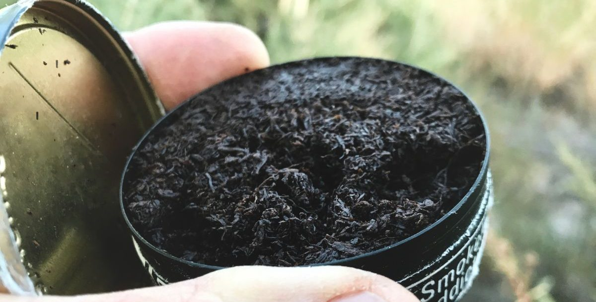
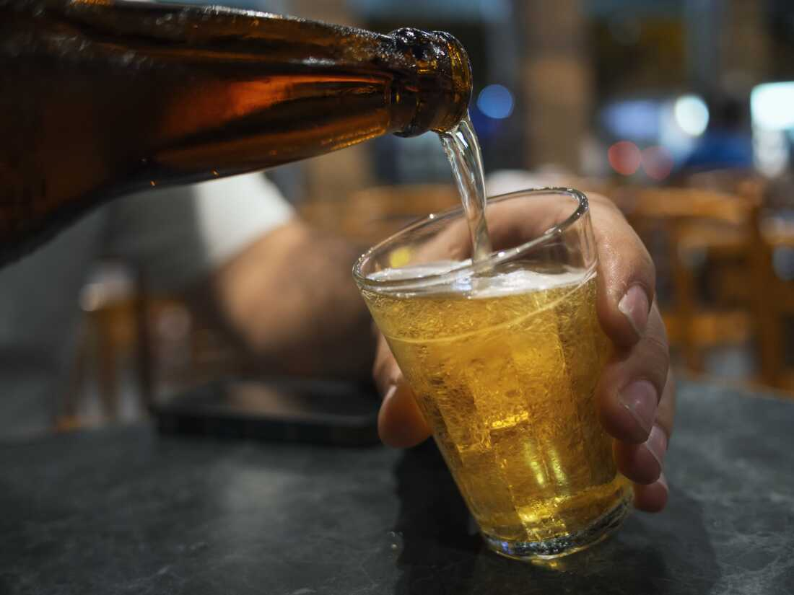
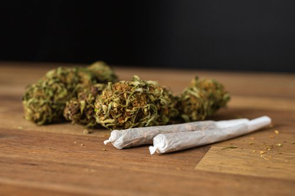
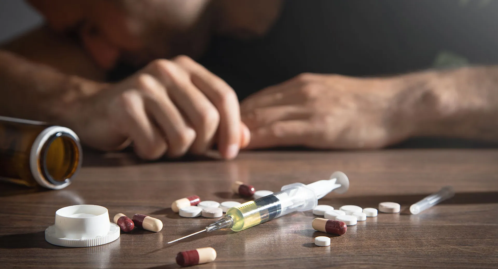

Small Choices, Big Consequences: Arrest Risk by Lifestyle
By Isabel Flynn, Christina Lee, and Kamyavalli Mopidevi
Meet Karen
Meet Bob
Neither of them has ever used tobacco, cigarettes, alcohol, marjuanna, hard drugs, and both are
currently free from depression.
With no differences in their past behavior, Bob is still 4x more likely to be arrested than
Karen — solely due to gender.
Now let’s follow Karen and Bob as they navigate life’s pivotal choices — and watch how each decision pulls them
closer to freedom — or a future behind bars.

Later that year, Karen and Bob tried chewing tobacco, lets see how it changed the numbers.
Only a 1% increase small change, though this small change for a single try shifted their arrest risk — now let’s see what happens if they try cigarettes.
Not long after, Karen and Bob each tried smoking a cigarette — just once. Another small act… but would it have
consequences?
Even one cigarette nudged their risk higher, with a notible spike for men.

Afterward, they tried alcohol — just a sip at a party. Let’s see how that changed their story.
Just one drink nudged their risk even higher — and they haven’t even touched the harder stuff yet.

Next, they tried marijuana — just once at a concert. Let’s see how that decision affected their risk.
With each choice stacking on top of the last, Karen and Bob’s arrest risk continues to rise.

Select any hard drugs Karen and Bob try:
Karen and Bob find themselves falling into severe depression.
Stacked Area Chart
This visualization helps us see how depression level shifts as substance
use increases, and how those pattern differ between men and women.
Each "stacked layer" (colored band) shows the percentage of people in that usage bin who fall into that depression level.
Number of days: 21-25,
Stacked Area Color Ranges:
Blue (Not depressed): from 0% to 20% → 20% of people felt no depression.
Light Blue (A little of the time): from 20% to 58% → 38% felt a little depressed.
Yellow (Some of the time): from 58% to 82% → 24% felt moderately depressed.
Orange (Most of the time): from 82% to 95% → 13% felt often depressed.
Red (All of the time): from 95% to 100% → 5% were severely depressed.
This tells you that as alcohol use increases, fewer people report being mentally well (blue area shrinks),
and more people report feeling depressed (yellow, orange, and red areas grow). It’s
a strong visual cue that higher alcohol use is correlated with more depression symptoms.